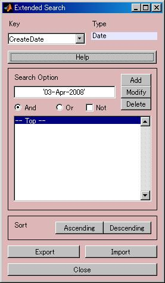

拡張検索機能 |
|||||||||||||||||||||||||
| 概要 検索キーの種類 整列 | |||||||||||||||||||||||||
| 概要 | |||||||||||||||||||||||||
|
拡張検索画面はP3のメイン画面に表示するデータの検索・整列を行います。

最初に検索キーを選択し、その検索キーに対して操作を行います。
| |||||||||||||||||||||||||
|
| |||||||||||||||||||||||||
|
ポップアップメニューで指定されたキーに関してデータを 昇順で整列するには"Ascending"ボタンを 降順で整列するには"Descending"ボタンを押してください。 | |||||||||||||||||||||||||
| 概要 Top |
|